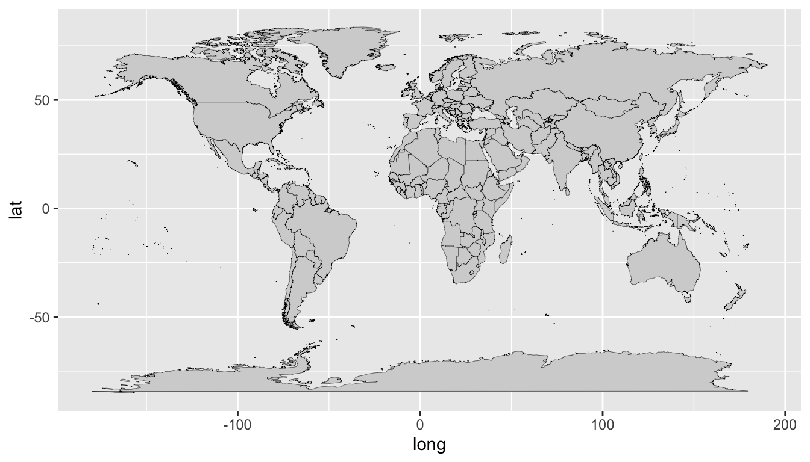
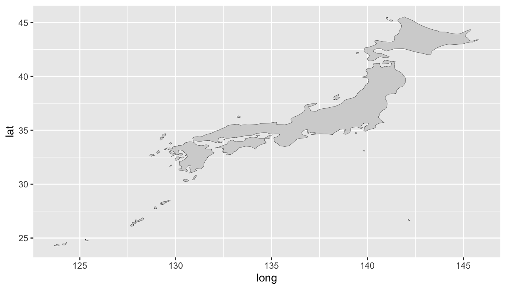

pacman::p_load(tidyverse, maps, jpndistrict, countrycode)2 Spatial data operations
The following packages will be required for this chapter:
- As of January 25, 2021,
jpndistricthas been removed from CRAN, so if you really want to install it, please install it directly from the github repository. To install, please use the following code in yourConsole:
install.packages("remotes")
remotes::install_github("uribo/jpndistrict")2.0.1 World map
The
mapspackage contains data for the world, USA, France, Italy and New Zealand. It contains information such as latitude, longitude, group, region, etc. like this.First call the world map data
You can see the data structure by using
headcommand.
world_map <- map_data("world")
head(world_map) long lat group order region subregion
1 -69.89912 12.45200 1 1 Aruba <NA>
2 -69.89571 12.42300 1 2 Aruba <NA>
3 -69.94219 12.43853 1 3 Aruba <NA>
4 -70.00415 12.50049 1 4 Aruba <NA>
5 -70.06612 12.54697 1 5 Aruba <NA>
6 -70.05088 12.59707 1 6 Aruba <NA>- By using the
ggplot2boundaries can be drawn withgeom_polygon()with latitude and longitude as shown in Figure 2.1
world_map %>%
ggplot(aes(x = long, y = lat, group = group)) +
geom_polygon(fill = "lightgray", colour = "black", size = 0.1)

2.0.2 Japan map
If we limit the data with
filter(), we can also draw a map of specific countries.For instance, we will filter the data for Japan and draw a map as shown in Figure 2.2
world_map %>%
filter(region == "Japan") %>%
ggplot(aes(x = long, y = lat, group = group)) +
geom_polygon(fill = "lightgray", colour = "black", size = 0.1)

Unfortunately
mapspackage only have the country level information.If you want to draw a map of prefectures, use the
jpnprefspackage. There is a list of prefectures in thejpnprefsattached to the package.
#head(jpnprefs)Table 1 represents the prefecture numbers in
jpnprefspackagePrefecture Code prefecture Code Prefecture Code Hokkaidō 1 Ishikawa 17 Okayama 33 Aomori 2 Fukui 18 Hiroshima 34 Iwate 3 Yamanashi 19 Yamaguchi 35 Miyagi 4 Nagano 20 Tokushima 36 Akita 5 Gifu 21 Kagawa 37 Yamagata 6 Shizuoka 22 Ehime 38 Fukushima 7 Aichi 23 Kōchi 39 Ibaraki 8 Mie 24 Fukuoka 40 Tochigi 9 Shiga 25 Saga 41 Gunma 10 Kyōto 26 Nagasaki 42 Saitama 11 Ōsaka 27 Kumamoto 43 Chiba 12 Hyōgo 28 Ōita 44 Tōkyō 13 Nara 29 Miyazaki 45 Kanagawa 14 Wakayama 30 Kagoshima 46 Niigata 15 Tottori 31 Okinawa 47 Toyama 16 Shimane 32 To pull the prefecture data, enter the number of the prefecture corresponding to
jpn_pref().
#kochi <- jpn_pref(39)
#head(kochi)We use
geom_sf()because the boundaries of municipalities are a standard called simple features (sf).We can draw a map of Kochi prefecture of Japan which consists all the cities. As shown in ?fig-mymap-12.3, we can plot the boundaries of the cities inside Kochi Prefecture.
#kochi %>%
# ggplot() +
# geom_sf()- By using additional feature of
geom_sf, we can improve the visualization of the map as ?fig-mymap-12.4
#kochi %>%
# ggplot() +
# geom_sf(aes(fill = city), show.legend = FALSE)- By using geom_point feature, we can specify the capital of the Kochi prefecture as ?fig-mymap-12.5
#kochi %>%
# ggplot() +
# geom_sf(aes(fill = city), show.legend = FALSE) +
# geom_point(aes(x = capital_longitude, y = capital_latitude),
# colour = "black", data = jpnprefs %>% filter(prefecture == "高知県"))